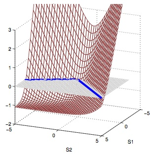
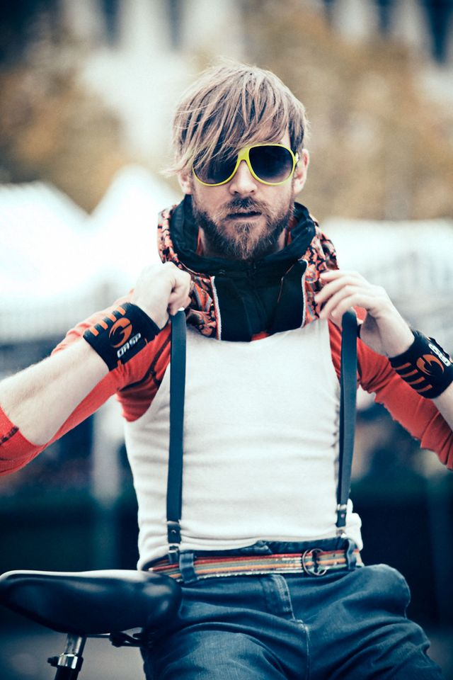
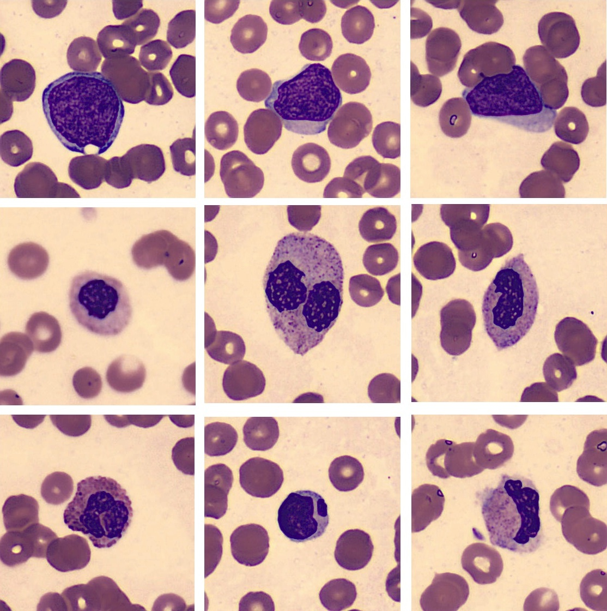

Oscar Beijbom
I'm doing a post-doc at the Berkeley Vision and Learning Center on automated quantification of scientific image-data together with Trevor Darrell and Ove Hoegh-Guldberg.
I studied computer science at UCSD under David Kriegman and Serge Belongie, and Engineering Physics at Lund University under Kalle Åström.
I was the lead developer at Hövding where I created the algorithmic framework and hardware design for their invisible bicycle helmet. I have also worked on automated dietary logging systems for consumer applications and focusing algorithms for image-based cell analysis.
Lately I have been having tons of fun developing CoralNet, deploying deep convolutional neural networks to help coral reef ecologists mine their image data.
Projects
Some of my favourite research projects that I have worked on.
CoralNet
CoralNet is a repository and a resource for benthic images analysis. The site implements our method from CVPR2012 and allow researchers, agencies, and private partners to rapidly annotate benthic survey images. The site also serves as a repository and collaboration platform for the scientific community. [www]
CoralNet users include the Caitlin Seaview Survey, the Australian Institute of Marine Science (AIMS) , Washington State University, University of Washington, University of North Carolina, Scripps Institution of Oceanography, Colby College, and Stanford@Sea.
Cost-Sensitive Multiclass Learning
UCSD, San Diego, CA, USA
Supervised machine learning algorithms are commonly studied cost-balanced binary classification. In such scenario the algorithm learns to seperate between two equally costly (important) classes. However, in many practial sitautions, there are multiple classes, and in addition, misclassification costs may vary between the classes. This leads to the more complicated scenario of cost-sensitive multiclass learning.
In joint work with Steve Branson, we proposed a fast structured Support Vector Machine (SVM) solver capable of cost-sensitive multiclass learning. The solver is based on coordinate dual ascent and converges order of magnitudes faster than previous structured SVM solvers. In another paper I examined properties of loss functions for cost-sensitive multiclass learning together with Mohammad Saberian, and showed that a property, which we call guess-averse has strong empirical imporatance.
Counting Calories
Microsoft Research, Seattle, Washington, USA
 The World Health Organization (WHO) predicts that overweight and obesity may soon replace more traditional public health concerns such as undernutrition and infectious diseases as the most significant cause of poor health. Logging food and calorie intake has been shown to facilitate weight management, but current food logging methods are time-consuming and cumbersome, which limits their effectiveness.
The World Health Organization (WHO) predicts that overweight and obesity may soon replace more traditional public health concerns such as undernutrition and infectious diseases as the most significant cause of poor health. Logging food and calorie intake has been shown to facilitate weight management, but current food logging methods are time-consuming and cumbersome, which limits their effectiveness.
During my internship at Microsoft Reseach, I developed a practical method for food-logging from images. The method utilize a data-base of menu items to estimate the nutritioal content of the querry image. As demonstrated on a challenging Menu-Match dataset and an existing thirdparty dataset, our approach outperforms previous computer vision methods. Our Menu-Match dataset of realistic restaurant meals is publicly available.
Building An Invisible Bike Helmet
Hövding AB, Malmö Sweden
 From Hövding's website: "Hövding is a bicycle helmet unlike any other currently on the market. It's ergonomic, it's practical, it complies with all the safety requirements, and it's also subtle and blends in with what else you are wearing. Hövding is a collar for bicyclists, worn around the neck. The collar contains a folded up airbag that you'll only see if you happen to have an accident. The airbag is shaped like a hood, surrounding and protecting the bicyclist's head. The trigger mechanism is controlled by sensors which pick up the abnormal movements of a bicyclist in an accident. Hövding is a practical accessory that's easy to carry around, it's got a great-looking yet subtle design, and it will save your life."
I was fortunate to be the first employee at Hövding. My task was to develop the accident detection system from scratch. This involved everything from selecting hardware sensors, collecting train data, setting up a computational infrastructure, defining target performances, and developing the actual algorithm. I worked with a small team of engineers on this task.
Hövding has been covered in thousands of video and news-releases, inluding storys from NBC, WIRED, The Washington Post, and der Spiegel. Filmmaker Fredrik Gerttens short-film about Hövding have been viewed over 20 million times. Some of my other personal favourites are this story by a Swiss independent reporter, and this one by a German talk show host. Please see Hövdings press page for a complete list.
Blood cell focus
Cellavision AB, Lund Sweden
From Cellavisions website: "CellaVision develops and markets products for the health care sector, enabling fast and firm blood cell analysis and quality assurance of morphology diagnosis. The company has cutting-edge expertise within sophisticated digital image analysis, artificial intelligence and automated microscopy. For laboratories, this means increased efficiency, a simplification of the procedures and confirmed proficiency. The product line includes systems for automatic blood cell differentials and software for differential proficiency testing and education. The products are sold to hospitals and laboratories in Europe, North America and Asia."
I did my masters thesis at Cellavision, where I worked on a single-image focus level assessment method for blood cell images. This is in contrast with standard methods for image focusing that use multiple images together to determine focus level. The method I developed has an international patent and is currently deployed.